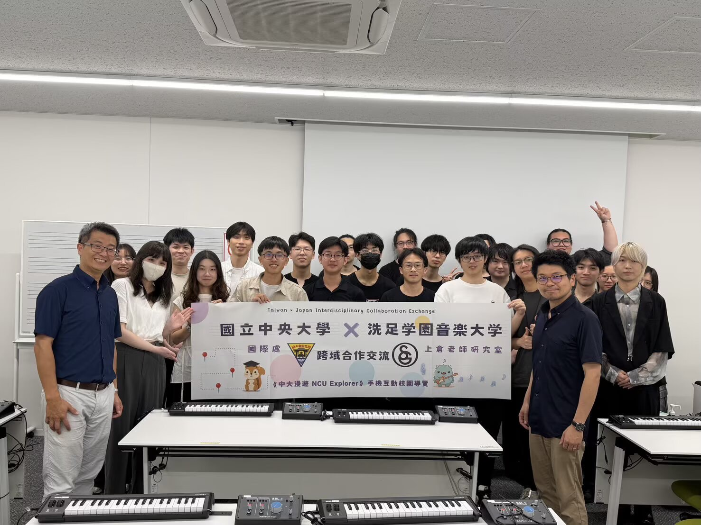

Project / 2026.06
游戏《ドングリ》
- 合作
- 洗足学园音乐大学 上仓研究室
× 台湾国立中央大学 - 担任
- 配乐
- 时间
- 2026.06

01跨域合作交流合影
国立中央大学 × 洗足学园音乐大学跨域合作交流。横幅：“Taiwan × Japan Interdisciplinary Collaboration Exchange”，國立中央大學國際處 × 上倉老師研究室，《中大漫遊 NCU Explorer》手機互動校園導覽。照片右侧手持横幅的白衣男子右边一位为本人。
Taiwan × Japan Interdisciplinary Collaboration Exchange between National Central University (Office of International Affairs) and Senzoku Gakuen College of Music (Prof. Uekura’s lab), with the banner for “NCU Explorer”, an interactive mobile campus tour. Yin Yunqing stands immediately to the right of the man in white holding the right end of the banner.
国立中央大学 × 洗足学園音楽大学（上倉ゼミ）の分野横断コラボレーション交流。横断幕「Taiwan × Japan Interdisciplinary Collaboration Exchange」、『中大漫遊 NCU Explorer』スマホ対応インタラクティブ校内ガイド。写真右側、横断幕を持つ白い服の男性のすぐ右が本人。